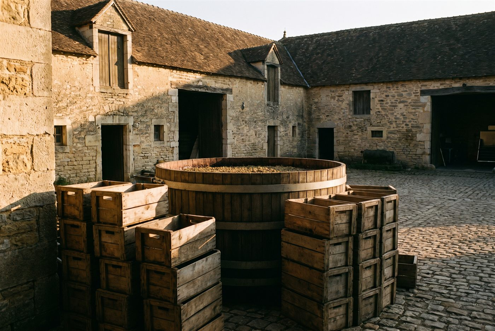

Les domaines · Côte de Nuits · Corgoloin
12
Corgoloin · Côte de Nuits
Domaine Camille Thiriet
Des pinots noirs aériens et digestes qui réhabilitent le sud de la Côte de Nuits.

Ambiance de Corgoloin
Fondé en 2016 à Corgoloin par Camille Thiriet et l'œnologue canadien Matt Chittick, le domaine a d'abord été un micro-négoce vinifié dans un garage, avant d'acquérir ses premières vignes en 2021 puis de reprendre le Domaine Gilles Jourdan en 2022. Il travaille aujourd'hui près de six hectares, surtout en Côte de Nuits-Villages, sur les terroirs discrets de Corgoloin et de Comblanchien. Vinifications parcellaires, infusions douces, une partie des vignes labourées au cheval, sans revendiquer d'étiquette bio ou nature.
Blancs
- Cépage · ChardonnayPetite parcelle de 0,19 ha à Corgoloin, élevée dix mois en fûts; profil minéral.
- Cépage · AligotéTrois vieilles parcelles de Meursault, Corgoloin et Comblanchien, élevées dix mois en fûts.
Rouges
- Cépage · Pinot noirPremière vigne en propre du domaine, la parcelle la plus haute à 320 m d'altitude sur une mosaïque de sols rocheux.
- Cépage · Pinot noirMonopole de 0,60 ha sous La Montagne, argilo-calcaire profond veiné de marnes bleues; cerise noire et violette.
- Cépage · Pinot noirVignes de 60 ans à 280 m d'altitude sur les coteaux de Corgoloin; expression aérienne et fine.
- Cépage · Pinot noirVignes de 70 ans à Comblanchien sur calcaire rocheux peu profond; fraîcheur et minéralité.
- Cépage · Pinot noirAssemblage des parcelles Le Creux de Sobron et Les Grandes Vignes, avec environ la moitié de vendange entière.
- Cépage · Pinot noirVignes de 50 ans voisines du Clos de la Maréchale, argilo-calcaire classique de la Côte de Nuits.
- Cépage · Pinot noirVieilles vignes de 90 ans à Pommard sur argiles très blanches; puissance et délicatesse.
- Cépage · Pinot noirVignes de 90 ans à Corgoloin sur sols sablo-argileux; bouquet floral de rose et fraise des bois.
Ces cuvées vous parlent ?
Demander les disponibilités